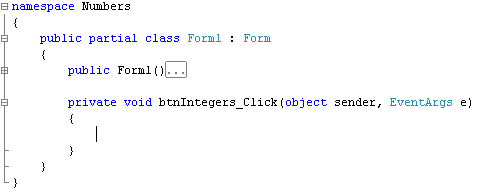
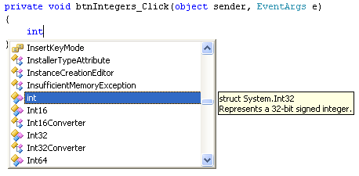
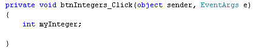
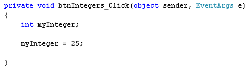
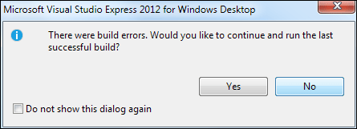
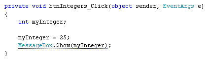
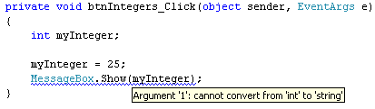
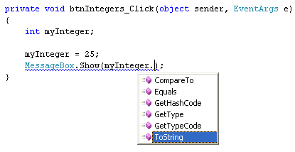
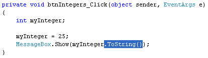
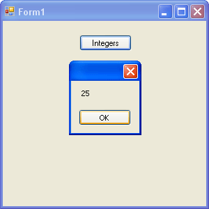

Numbers Variables in C# .NET
As well as storing text in memory you can, of course, store numbers. There are a number of ways to store numbers, and the ones you'll learn about now are called Integer, Double and Float. First up, though, are Integer variables.
First, close any solution you have open by clicking File > Close Solution from the menu bar at the top of Visual Studio. Start a new project by clicking File > New Project. From the New Project dialogue box, select Windows Forms Application from the available templates. Type a Name for your project. Call it Numbers.
Click OK, and you'll have a new form to work with.
C# Integers
An integer is a whole number. It's the 6 of 6.5, for example. In programming, you'll work with integers a lot. But they are just variables that you store in memory and want to manipulate. You'll now see how to set up and use Integer variables.
Add a button to your form, and set the following properties for it in the Properties Window:
Name: btnIntegers
Text: Integers
Location: 110, 20
Now double click your button to get at the code:

In the previous section, you saw that to set up a string variable you just did this:
string myText;
You set up an integer variable in the same way. Except, instead of typing the word string, you type the word int (short for integer).
So, in between the curly brackets of your button code, type int. You should see the word turn blue, and the IntelliSense list appear:

Either press the enter key on your keyboard, or just hit the spacebar. Then type a name for your new variable. Call it myInteger. Add the semi-colon at the end of your line of code, and hit the enter key. Your coding window will then look like this:

Notice the text in the yellow box, in the image one up from the one above. It says:
Represents a 32-bit signed integer
A signed integer is one that can have negative values, like -5, -6, etc. (The opposite, no negative numbers, is called an unsigned integer.) The 32-bit part is referring to the range of numbers that an integer can hold. The maximum value that you can store in an integer is: 2,147,483,648. The minimum value is the same, but with a minus sign on the front: -2,147,483,648.
To store an integer number in your variable, you do the same as you did for string: type the name of your variable, then an equals sign ( = ), then the number you want to store. So add this line to your code (don't forget the semi-colon on the end):
myInteger = 25;
Your coding window should look like this:

So we've set up an integer variable called myInteger. On the second line, we're storing a value of 25 inside of the variable.
We'll use a message box to display the result when the button is clicked. So add this line of code for line three:
MessageBox.Show(myInteger);
Now try to run your code. You'll get the following error message:

You should see a blue wiggly line under your MessageBox code:

Hold your mouse over myInteger, between the round brackets of Show( ). You should see the following yellow box:

The error is: "Cannot convert from int to string". The reason you get this error is because myInteger holds a number. But the MessageBox only displays text. C# does not convert the number to text for you. It doesn't do this because C# is a programming language known as "strongly typed". What this means is that you have to declare the type of variable you are using (string, integer, double). C# will then check to make sure that there are no numbers trying to pass themselves off as strings, or any text trying to pass itself off as a number. In our code above, we're trying to pass myInteger off as a string. And C# has spotted it!
What you have to do is to convert one type of variable to another. You can convert a number into a string quite easily. Type a full stop (period) after the "r" of myInteger. You'll see the IntelliSense list appear:

Select ToString from the list. Because ToString is a method, you need to type a pair of round brackets after the "g" of ToString. Your code will then look like this (we've highlighted the new addition):

The ToString method, as its name suggests, converts something to a string of text. The thing we are converting is an integer.
Start your programme again. Because you've converted an integer to a string, you should find that it runs OK now. Click your button and you should see the message box appear:

In the next lesson, we'll take a look at double variables, and float variables.